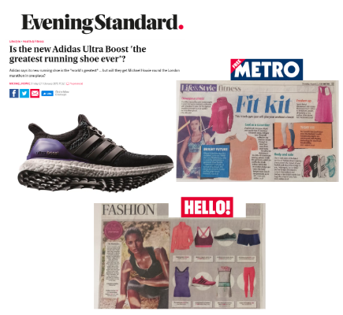
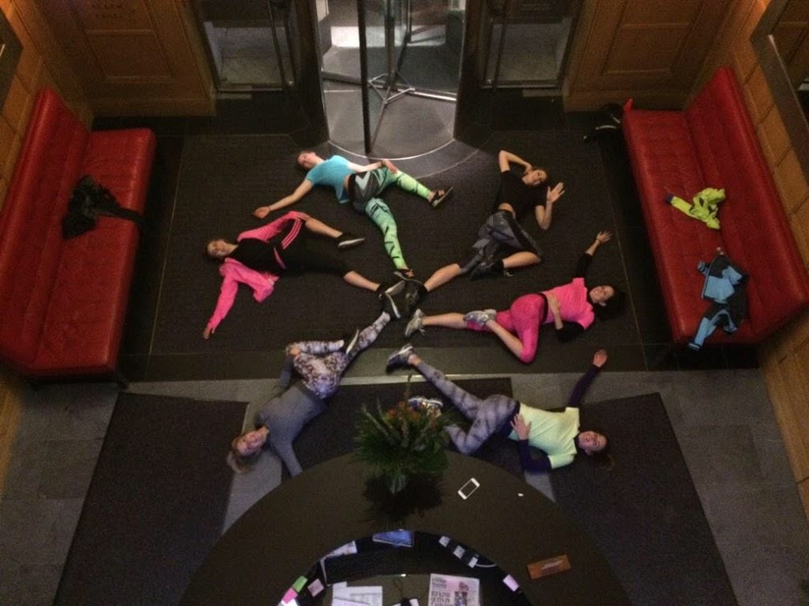
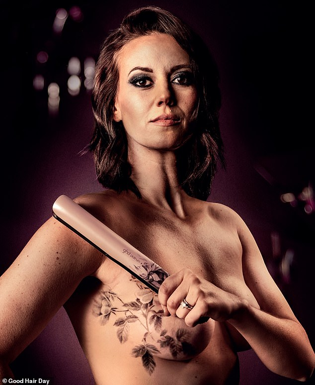
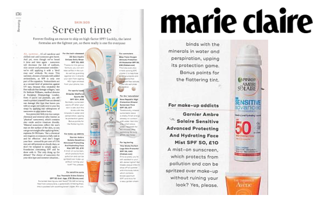
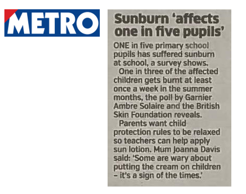
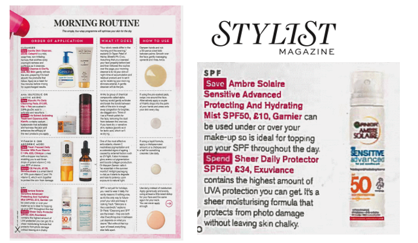
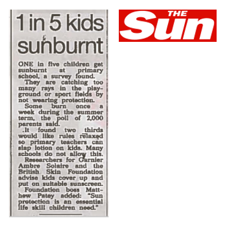
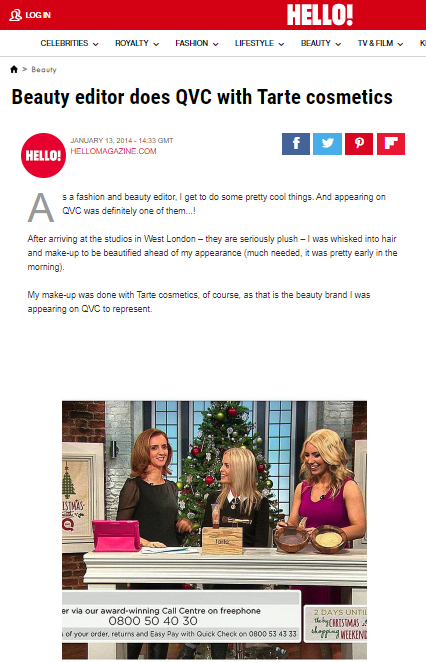

Work
This is a non-exhaustive list highlighting some of the most successful campaigns I have had the pleasure of managing throughout my career.
Food & Drink
Doritos
Naked Cold Pressed Juice
Pop Works & Company
Magnum Ice Cream
Health & Fitness
Adidas
Beauty
Ghd
Garnier Ambre Solaire
QVC Beauty
Doritos Heatburst
Planning and executing the PR launch of the new Doritos Heatburst collection, targeting both consumer and trade media. The client wanted to target both male and females with the new collection.
A robust media relations programme was drafted targeting relevant media channels with the news, alongside an eye-catching press release. Creative media kits were issued to a list of top tier media to review and try the new flavours themselves, resulting in a number of social media posts.
Extensive coverage secured in the likes of The Grocer, Metro, Closer, Now, Shortlist, Convenience Store and Just Food. Coverage was also secured within STYLIST magazine’s The Style List – which was a first for the brand!

Naked Cold Pressed Juice
Managed the PR for the launch of the Naked Cold Pressed Juice range, developing the media relations strategy, managing a two day media house tour and leading on securing results for the client.
Coverage was secured across high reaching and aspirational media titles such as The Mail Online, Stylist and the Metro. Trade media were also targeted securing results on Just Drinks, Bev Industry and Progressiver Grocer.
Also responsible for engaging fitness, health and food influencers and managing the content creation process.


Pop Works & Company Popcorn
Responsible for the PR launch of new brand Pop Works & Company, developing the media relations strategy, leading on securing results for the client and managing the press office.
As part of the PR strategy we recommended a media and influencer launch event to showcase the new flavours of the popcorn, providing attendees the opportunity to taste and trial the unexpected flavours.
Following on from the press event, coverage was secured in top tier consumer and food media titles such as Metro, Good Food magazine and STYLIST. Coverage was also secured on a number of micro and macro influencer channels.


Magnum X Moschino
Managed the press office for the UK activation of the ‘Daring to go Double’ campaign. Collaborating with daring designer Jeremy Scott, creative director of Moschino, and international supermodel and actress Cara Delevigne on a 360 campaign.
Responsible for securing coverage for the new indulgent Magnum Double flavours - Coconut and Raspberry and the Magnum x Moschino limited edition collaboration.
Also responsible for the launch of the Magnum Pleasure Store, planning and executing the VIP launch party and securing coverage within the “What’s On” pages in the likes of TimeOut, Mail Online, Daily Express and Evening Standard.


Adidas Ultraboost
Crafted a PR media relations strategy and managed the press office for the launch of the new running trainer - adidas Ultraboost. Securing news and product placement within aspirational lifestyle and consumer media, such as HELLO! magazine, GQ, The Independent, The Evening Standard, STYLIST, GLAMOUR and Dezeen.
Responsible for engaging influencers and hosting weekly media adidas run clubs for on-going brand awareness and talkability. See below for a picture of us all warming up at Vogue House.


ghd
To celebrate the 15th year partnership of ghd x Breast Cancer Now, ghd teamed up with mastectomy tattoo artist David Allen, who helps rebuild the confidence of women affected by cancer through his tattoos to create a range of limited edition stylers using his tattoo artwork. I created a PR strategy that included a media/ influencer launch event, a media relations programme and influencer engagement.
Overseeing and managing the launch event from planning to execution, as well as securing in-depth features for the partnership and limited edition stylers - coverage was secured in NZ’s national newspaper, as well as a number of key beauty titles.

Garnier Ambre Solaire Face Mist
To celebrate the launch of the Garnier Ambre Solaire Face Mist, we were tasked to create a PR launch proposal to ensure maximum exposure amongst the UK beauty media.
My role on the project was to create a PR strategy for the launch that included a media/ influencer launch event and a media relations programme. We also recommended producing a research news story that was crafted for the national news pages. Widespread coverage was secured in the likes of the Mail Online, Metro and The Sun, as well as a number of consumer titles.
Product placement coverage was secured in a number of premium and aspirational women’s media titles, such as STYLIST, Harper’s Bazaar, Grazia and Marie Claire.




QVC Beauty
Managed the PR for QVC Beauty, focusing on elevating the brand and product range in the UK, through a robust press office and influencer engagement programme.
As well as securing high levels of product coverage on a monthly basis, (in the likes of Cosmopolitan, Grazia, Stylist, Glamour and Marie Claire), I also secured a number of feature placements. Including in HELLO! where the Beauty Editor appeared live on-air, the coverage reviewed what it was like to work as a QVC presenter.

Back to top